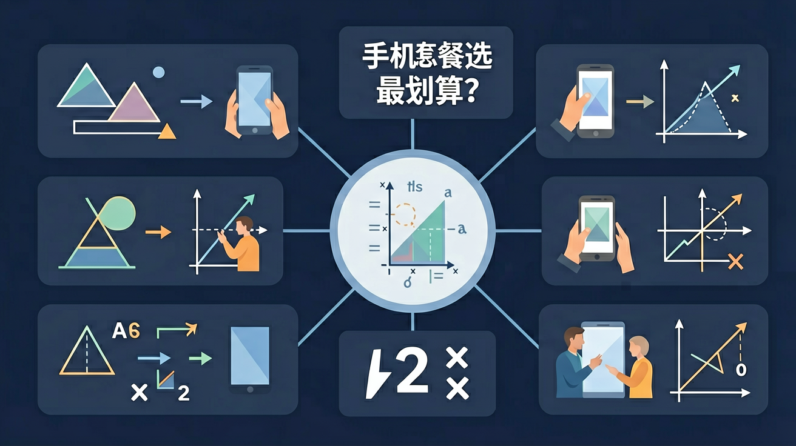

为什么要学一次函数？你已经会算单次价格，但面对“月租 + 单价 × 用量”这类真实选择时，光靠直觉会出错，所以我们用一次函数把选择变成可验证的图像证据。
本课使用 Edge Neural 高质量 TTS 生成 MP3，不使用低质量浏览器朗读作为发布音频。
选择或输入后，后续探究会围绕你的问题展开。
套餐 A：月租 20 元，每 GB 收 6 元。套餐 B：月租 50 元，每 GB 收 2 元。
套餐 A：y = 20 + 6x；套餐 B：y = 50 + 2x。这里 x 是流量，y 是费用。
6 和 2 表示每多 1GB 多花多少钱。斜率越大，费用涨得越快。
两条线相交时，两种套餐费用相同。交点左侧和右侧，划算方案会改变。
表格里，每多 1GB，费用按固定数增加。
总费用 = 固定月租 + 每 GB 单价 × 用量。
打车费、会员费、打印费也常是同样结构。
套餐 C：10 + 5x，x=6 时多少钱？
比较 y=15+4x 与 y=39+x，求费用相等的 x。
自己设计两个打印店收费方案，让它们在 80 页时价格相同。
易错点提醒：不要把“月租”当成斜率，也不要把“每 GB 单价”当成截距；交点表示两种方案费用相同，不表示用量最大。
变量关系一次函数表达式函数图像交点与比较现实情境建模
同学们，假设你每月手机流量使用情况如下：刷短视频约消耗1GB/小时，看网课约0.5GB/小时。现有A套餐月租58元含20GB，超出后5元/GB；B套餐月租88元不限量但限速。若小明每月平均使用25GB，哪种更省钱？这个实际问题可以通过建立一次函数模型来解决。我们观察到：套餐费用=固定月租+超出部分费用，这种'基础量+变动量'的结构正是典型的一次函数y=kx+b形式。通过具体计算可知，A套餐总费用=58+5×(25-20)=83元，B套餐固定88元，此时A更划算。
让我们用数学语言描述这个问题。设x为每月使用流量(GB)，y为总费用(元)。A套餐的函数关系为：当x≤20时，y=58；当x>20时，y=58+5(x-20)=5x-42。B套餐始终为y=88。这两个分段函数都可以在坐标系中表示为折线。特别要注意定义域限制：实际场景中x≥0。例如当x=30GB时，A套餐y=5×30-42=108元，B套餐仍88元，此时B更优。通过建立这样的数学模型，我们就把生活问题转化为了可以精确计算的数学问题。
在平面直角坐标系中，用横轴表示流量x(GB)，纵轴表示费用y(元)。绘制A套餐图像：前20GB是y=58的水平线，之后是斜率为5的射线。B套餐是y=88的水平线。两线交点对应流量临界值：解方程5x-42=88得x=26GB。这意味着：当用量<26GB时A省钱，>26GB时B划算，=26GB时费用相同。图像解法直观展示了'性价比反转点'，比纯数字计算更容易理解变化趋势。比如小红用量波动大（15-35GB），通过图像能快速判断B套餐更保险，避免超出流量产生高额费用。
在函数y=kx+b中，斜率k具有重要现实意义。对于A套餐超出部分y=5x-42，斜率5表示每多用1GB就需要多付5元，这称为边际成本。而B套餐斜率0说明额外流量不增加费用。生活中很多场景都有类似规律：出租车费=起步价+里程价，水电费=基本费+超额部分等。例如某城市出租车3公里内10元，之后2.4元/公里，其函数为分段函数：当x≤3时y=10；当x>3时y=10+2.4(x-3)=2.4x+2.8，斜率2.4就是每公里的增量成本。理解斜率有助于预测消费变化。
数学函数通常定义在实数域，但实际问题必须考虑定义域限制。在套餐问题中：①流量x必须≥0；②某些套餐有上限（如限速阈值）。例如C套餐月租70元含30GB，超量后限速1Mbps但不收费。虽然函数式仍是y=70，但x>30时网速下降影响使用体验，这属于隐性成本。再比如家庭宽带100M套餐，理论上可无限使用，但实际会受到'公平使用原则'限制。因此建立模型时，除了显性的费用函数，还要考虑服务质量、使用体验等软性约束条件，这些都可能影响最终决策。
当出现三个及以上套餐时，需要系统化比较。例如新增D套餐：月租98元含40GB，超出后3元/GB。解题步骤：①列出所有分段函数；②求每两个函数的交点确定优势区间；③结合自身用量习惯选择。计算得A与D的交点：5x-42=98+3(x-40)，解得x=38GB。这意味着：用量<26GB选A，26-38GB选B，>38GB选D。实际应用中，还要考虑套餐包含的通话时长、国际漫游等附加服务。例如商务人士可能更看重通话分钟数，学生群体更关注流量，这需要建立多维度评价体系。
套餐资费会随时间变化，函数模型也需要更新。例如运营商推出促销活动：A套餐前三个月月租减半。这时函数变为：1-3月y=29+5max(x-20,0)，4月起恢复原价。长期用户需计算年均费用。假设某用户全年用量均匀分布，月均28GB：前3个月费用=3×(29+5×8)=177元，后9个月=9×(58+5×8)=882元，年均(177+882)/12≈88.25元/月，仍比B套餐88元略高。这种动态分析需要考虑时间维度，可以引入阶梯函数或分段函数组合，培养动态建模思维。
更精细的建模可以引入概率分析。统计自己过去12个月的流量使用记录，计算平均值μ和标准差σ。假设用量服从正态分布N(μ,σ²)，就能计算各套餐的期望支出。例如历史数据显示μ=24GB，σ=4GB，那么：选A套餐的超出概率P(x>20)≈84%，期望超额量=4×φ(1)≈3.2GB（φ为标准正态概率密度函数），期望月费≈58+5×3.2=74元。相比之下B套餐固定88元，从统计学角度看A更优。这种进阶方法将一次函数与概率统计结合，适用于用量波动较大的用户群体。
1. 你平时如何选择手机套餐？会考虑哪些因素？2. 如果某套餐月租60元含10GB，超出部分2元/100MB，你能列出费用函数吗？
1. 某套餐月租75元含15GB，超出后3元/GB，用量22GB时应缴费多少？2. 若y=30+2x表示某计费方式，其中x的单位是小时，y的单位是元，斜率2代表什么实际意义？
常见错因分析：①忽略定义域限制，认为函数在所有实数都适用；②混淆斜率与截距的实际意义，如将月租费误认为单价；③未注意分段函数在不同区间的表达式变化。诊断方法：建议用'单位检验法'——给x赋予具体单位量纲，检查y的单位是否符合实际意义。
迁移探究：设计一个健身房会员费用比较方案。已知：基础卡月费200元含8次，超次收费30元/次；尊享卡月费350元不限次。分析不同运动频率下如何选择，并绘制费用函数图像说明临界点。